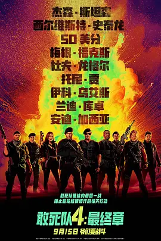

4.8
敢死队4：最终章
Expend4bles
2023
美国
评分 4.8
导演:
斯科特·沃夫
演员:
杰森·斯坦森 / 50 Cent / 梅根·福克斯 / 杜夫·龙格尔 / 托尼·贾
类型:
冒险,动作,惊悚
剧情简介
老牌雇佣兵们再次被召集，空气中弥漫着熟悉的火药味。巴尼的团队在一次秘密简报中获悉，一艘满载核弹的货轮正驶向危险水域，一旦失控，后果不堪设想。队员们虽已不再年轻，但听到这类任务时仍会露出那种久违的战意。杰森·斯坦森饰演的李圣这一回成了队伍的核心，他检查武器时动作利落，冷静的眼神像是已经在脑海里预演过整场战斗。货轮停泊在灰暗的海面上，金属甲板在浪打下发出沉闷声响。队员们夜色中潜入，钢索划过空气，靴子落在船体上的瞬间，紧张感随之蔓延。船舱内灯光闪烁，阴影摇动，巡逻的武装人员步伐杂乱却致命。李圣在狭窄的过道里迅速判断路线，他靠着闪避与反击，将敌人悄然放倒，而队友们也在不同方位同步推进，整个行动像一台多年磨合的战斗机器再度启动。随着他们深入货轮腹部，核弹装置的倒计时声清晰可闻，节奏急促，让所有人的呼吸都变得短促。走廊里，火光反射在金属壁上，敌人数量却比预想更多，战斗瞬间爆发，枪声震得舷窗微颤。李圣在混乱中指挥队伍拉开包围，爆炸波及的热浪掠过他的面庞，而他依旧稳稳向前推进。当他们终于抵达装置核心，真正的幕后操纵者现身，局势再度翻盘。巨轮随海浪摇晃，船体传来不祥的轰鸣声，时间却被压缩到极限。雇佣兵们在火焰与烟雾中冲刺、搏斗，试图夺回那唯一能阻止灾难的机会。海风呼啸，海面在脚下翻腾，他们明白——这一次，不只是任务成败，更是最后的战场。